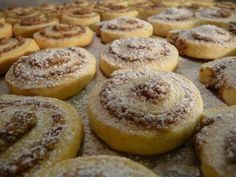
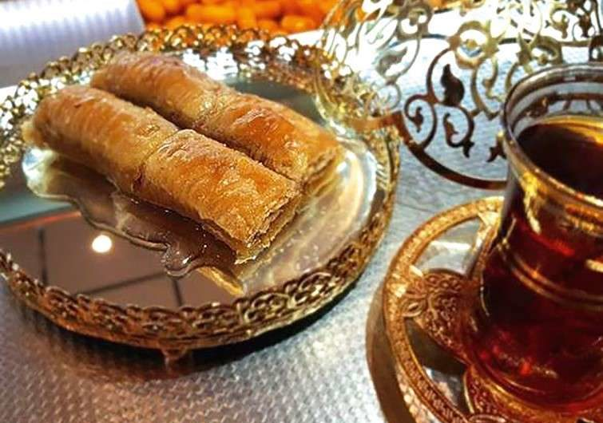

My Recipe Book
Contents:
- Recipe #1
- Recipe #2
- Recipe #3
Recipe #1: Pancakes

- Time: 30 minutes
- Serves: Immediately
| Ingredients |
Quantity |
| Flour |
150g |
| Salt |
One tea spoon |
| Milk |
1l |
| Egg |
2 |
| Oil |
1dl |
Step 1: Mix flour, salt and bit of water in a large bowl. Then slowly pour in the milk.
Step 2: Add in the eggs and oil.
Step 3: Heat up frying pan.
Step 4: Spoon batter onto the pan and cook on each side until it gets goldish color.
Step 5: Serve immediately.
Recipe #2: Ružice

- Time: 1 hour and 30 minutes
- Serves: Day after
| Ingredients |
Quantity |
| Egg |
1 |
| Sugar |
1 spoon |
| Oil |
1 cup |
| Milk |
1 bigger cup |
| Vanilla sugar |
10g |
| Yeast |
10g |
| Baking powder |
12g |
| Flour |
150g |
Topping
| Ingredients |
Quantity |
| Water |
4dl |
| Sugar |
200g |
Step 1: Knead the dough (melt the yeast in warm milk).
Step 2: Leave it to rise (about 30 minutes).
Step 3: Stretch it little fatter than a pie and sprinkle with walnuts (mixed with vanilla sugar).
Step 4: Roll it, cut it into plates fatter than 1cm and lay it in a Lim.
Step 5: Bake it and overflow it with a topping.
Recipe #3: Baklava

- Time: 30 minutes
- Serves: Day after
| Ingredients |
Quantity |
| Flour |
200g |
| Egg |
1 |
| Margarine |
250g |
| Oil |
Half cup |
| Baking powder |
5g |
| Sugar |
2 spoons |
| Yogurt |
2 spoons |
Topping
| Ingredients |
Quantity |
| Water |
4dl |
| Sugar |
200g |
Step 1: Knead the dough.
Step 2: Cut a small ball and roll it between your hands until you get about 4cm long piece.
Step 3: Press the piece against a metal plate (or just use fork to draw marks).
Step 4: Lay it in a Lim and put it in the oven.
Step 5: Overflow it with a topping.
Source: Some recipes websites